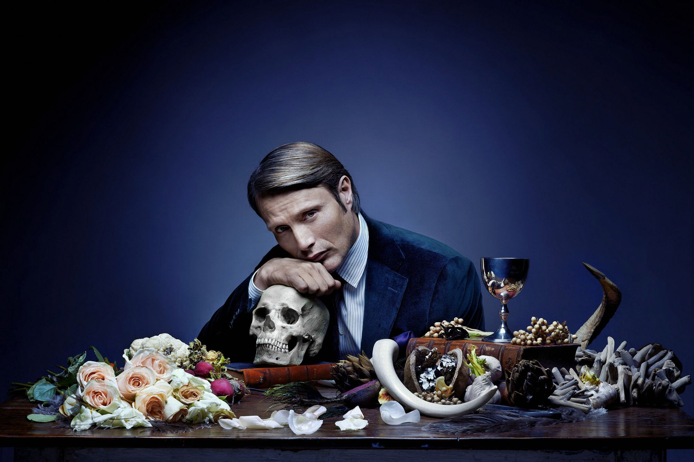

5: The Purge
Ratings : 🌟 6.5
Genre :ActionDramaHorror
Seasons : 2
Episodes : 20
Air-Date : September 4, 2018
Watch-Time : 42 min.(Per Ep.)
Synopsis:
With ties to the films, the series revolves around an alternate dystopian United States ruled by a totalitarian government that sanctions a 12-hour period which legalizes all crimes, including vandalism, theft, arson, and murder.
The first season follows several seemingly unconnected characters as they experience the night: Miguel Guerrero, a Marine searching for his sister Penelope who has joined a death cult; Jane Barbour, an executive who uses the Purge as an opportunity for revenge; and Jenna and Rick Betancourt, married entrepreneurs who attend a Purge party to seek investment capital from a wealthy Purge supporter.
4: The Terror
Ratings : 🌟 8.0
Genre : DramaAdventureHorror
Seasons : 2
Episodes : 20
Air-Date : March 25, 2018
Watch-Time : 60 min.(Per Ep.)
Synopsis:
Season1: In 1847-8, the crew of a real life Royal Naval expedition (later known as Franklin's expedition) led by three captains, Sir John Franklin, Francis Crozier and James Fitzjames, is sent to find the Arctic's fabled treacherous Northwest Passage but instead discovers a monstrous polar bear-like predator, a cunning and vicious Gothic horror that stalks the ships in a desperate game of survival. However, it soon becomes clear that that's just the beginning of their troubles. As things worsen and civilized behavior disintegrates in favor of survival at any cost, the crew must simultaneously battle the elements, the supernatural and eventually - themselves. The captains' only ally in all of this becomes a mute Inuit woman, who lives as an outcast from her tribe but still follows their old animistic religion. Season 2 (titled "Infamy") follows the inhabitants of the L.A.-based Terminal Island camp for Japanese Americans during WWII and a string of brutal deaths caused by a mysterious ...
3: The Walking Dead

Ratings : 🌟 8.2
Genre : DramaHorrorThriller
Seasons : 11
Episodes : 177
Air-Date : October 31, 2010
Watch-Time : 44 min.(Per Ep.)
Synopsis:
The Walking Dead takes place after the onset of a worldwide zombie apocalypse. The zombies, colloquially referred to as "walkers", shamble towards living humans and other creatures to eat them; they are attracted to noise, such as gunshots, and to different scents, e.g. humans. Although it initially seems that only humans that are bitten or scratched by walkers can turn into other walkers, it is revealed early in the series that all living humans carry the pathogen responsible for the mutation. The mutation is activated after the death of the pathogen's host, and the only way to permanently kill a walker is to damage its brain or destroy the body, such as by cremating it.
2: Hannibal
Ratings : 🌟 8.5
Genre : HorrorCrimeDrama
Seasons : 3
Episodes : 39
Air-Date : April 4, 2013
Watch-Time : 44 min.(Per Ep.)
Synopsis:
Will Graham is a special consultant with the FBI. He has a special gift whereby he can empathize with any individual and put himself in their shoes. This means he gets to help solve vicious murders, especially those involving serial killers, as he can profile the murderer - their method, motives and personality profile. For a particular case, the FBI also seek the help of Dr. Hannibal Lecter, a highly-respected psychiatrist. Will and Hannibal hit it off, and Will becomes a patient of Hannibal. Little does he know or suspect that Hannibal might be the most wanted serial killer in the US.
1: Dark

Ratings : 🌟 8.8
Genre : CrimeHorrorMystery
Seasons : 3
Episodes : 26
Air-Date : 1 December 2017
Watch-Time : 60 min.(Per Ep.)
Synopsis:
Children start vanishing from the German town of Winden, bringing to light the fractured relationships, double lives, and the dark pasts of four families living there, and unfurling a mystery that spans four generations.
The first season begins in 2019, but later grows to include 1986 and 1953 via time travel, when members of the show's central families become aware of a wormhole in the cave system beneath the local nuclear power plant. During the first season, secrets are revealed concerning the Kahnwald, Nielsen, Doppler, and Tiedemann families, and their lives begin crumbling as their ties are exposed. The conspiracy involves the missing children and the history of the town and its citizens.